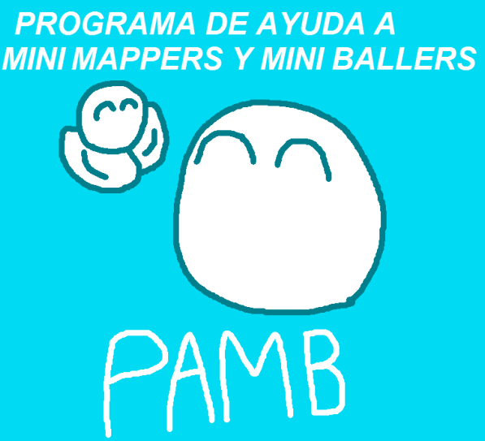
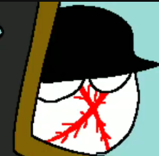
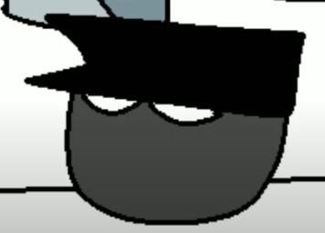

| ¿Qué es Pambazos Lore? | Pambazos lore es una serie web creada en tono de broma sobre la P.A.M.B (programa de ayuda para mappers y ballers), una organizacion de la comunidad de countryballs creada con el fin de ayudar a creadores de contenido pequeños, trata sobre como Leyendas, un youtuber real que hace videos de historia; y su fiel amigo Recordando (otro youtuber real) intentan gobernar el Planeta y la nacion de la P.A.M.B. mientras los héroes de esta historia (que pueden variar por capítulo) intentan detener los planes de Leyendas. |
| P.A.M.B. | Leyendas | Recordando |
|---|---|---|
|
Como ya se mencionó anteriormente, es una organizacion de la comunidad de countryballs creada con el fin de ayudar a creadores de contenido pequeños. Es el objetivo principal de leyendas y recordando; hacerse con su poder  |
Leyendas es un Youtuber real que hace videos relacionados a la historia, en la serie; es el antagonista principal junto con su amigo Recordando  |
Recordando la historia, o por su apodo "Recordando" es aliado de Leyendas, por consiguiente, es antagonista  |

| Manganeso |
|---|
| Califato |
|---|
 |
| Contenido | |||
|---|---|---|---|
| Personajes: | Lista de todos los personajes, principales y secundarios | Lugares: | Escenarios de los acontecimientos |
Todos los derechos sobre la creación de videos, su elaboración, publicación y creación original de este universo ficticio a su respectivo creador "Manganeso". Cualquier coinsidencia con personas vivas o muertas es mera coincidencia y no tiene que ver con la realidad. Cualquier interpretacion de eventos historicos es meramente satirico y no refleja opiniones reales
Contacto del programador: gonzalezmartin312@aol.com